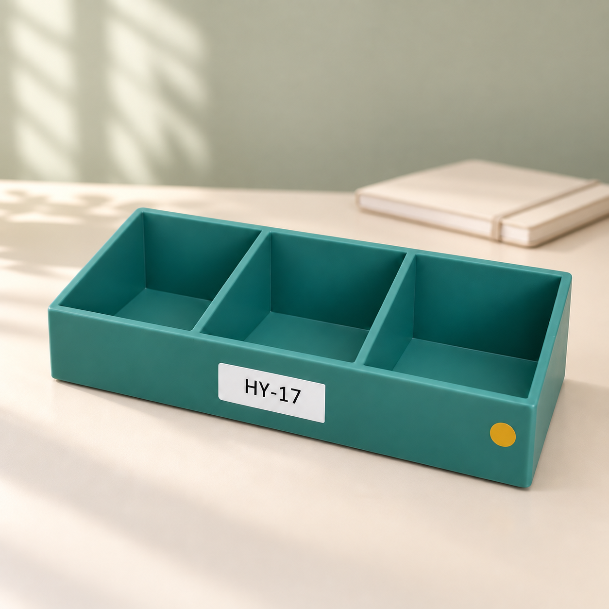

HY-17 三格收纳盒（虚构样本） · scene
已核对 · 待确认放在浅色桌面；除一本合上的笔记本外不增加其他道具
原图参考
候选 v2 · 保存图片 - 商品一致性 同时对照原始样本与上一版，三格结构、标签及黄色圆点保留；本演示不检验真实材质或物理色差。
- 文字 HY-17 标签保持可读，未出现其他文字。
- 卖点依据 没有添加尺寸、材质、认证、销量或性能信息。
- 视觉 产品完整可见，接触阴影与原场景相容，没有发现移除道具后的明显残留边缘。
- 使用范围 绿植、笔筒与挂画已移除；背景只保留指定笔记本。该结果仅作为虚构样本的功能演示候选。